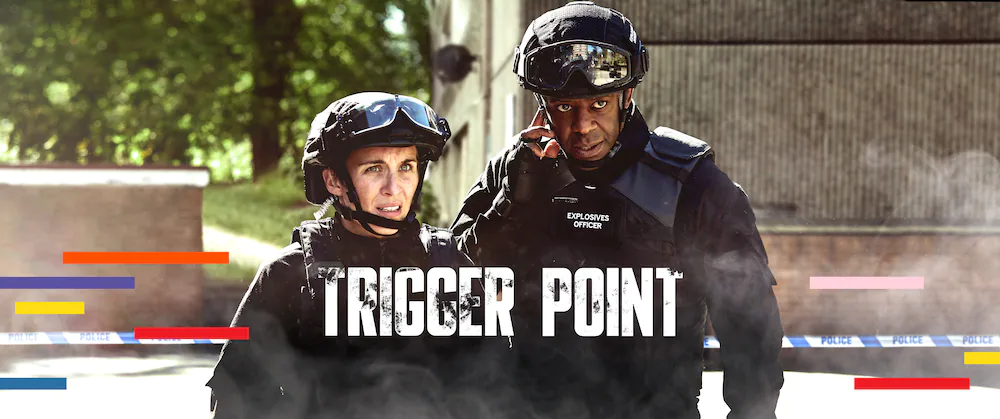

NEW SEASON
The Porter
Inspired by real events and set in the roar of the 1920s, THE PORTER follows the journeys of an ensemble of characters who hustle, dream, cross borders and pursue their ambitions in the fight for liberation - on and off the railways that crossed North America.
NEW SEASON
TALLBOYZ
The TALLBOYZ return with sketches raning from being filled with fantastical realism, like making a deal with the devil, the comedic takes on vulnerability, anti-racism and even Anne with an 'E'.

NEW SEASON
Trigger Point
Lana Washington is an ex-military bomb disposal operative (known as an 'Expo') and Afghan War veteran who heads a Metropolitan Police bomb squad, using her skills to counter the terrorist threat.